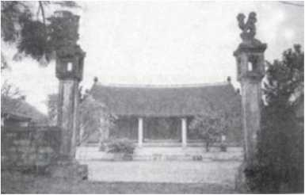

Giai Thoại 25

gô Quyền sinh năm Mậu Ngọ (898), mất năm Giáp Thìn (944), hưởng thọ 46 tuổi, ông là một trong những nhân vật lừng danh vào hàng bậc nhất của lịch sử nước nhà. Chân dung Ngô Quyền được sách Đại Việt sử kí toàn thư (ngoại kỉ, quyển 5) mô tả đại lược như sau:
“Vua là người mưu sâu, đánh giỏi, công tái tạo thật đáng đứng đầu các vua. Vua họ Ngô, húy là Quyền, người Đường Lâm (nay thuộc huyện Ba Vì, tỉnh Hà Tây - NKT), con nhà đời đời là quý tộc. Cha của Vua là (Ngô) Mân, làm chức Châu Mục Châu Đường Lâm. Khi Vua chào đời, trong nhà Vua bỗng có ánh sáng lạ tràn ngập. Vua có dung mạo khác thường, lưng có ba nốt ruồi. Các thày tướng cho là lạ, rằng có thể làm chủ cả một phương, nhân đó (Ngô Mân) mới đặt cho Vua tên húy là Quyền. Khi Vua lớn lên, tướng mạo khôi ngô, mắt sáng như chớp, dáng đi thong thả như hổ, trí dũng hơn người, sức có thể nâng được vạc. Sau, (Vua) từng làm nha tướng cho Dương Đình Nghệ, được Dương Đình Nghệ gả con gái cho, lại cho được quyền quản lĩnh Ái Châu (nay thuộc Thanh Hóa - NKT)” (Tờ 20 - b).
“Mùa xuân, tháng ba (năm Đinh Dậu, 937 - NKT), nha tướng của Dương Đình Nghệ là Kiều Công Tiễn (Kiều Công Tiễn cũng là con nuôi của Dương Đình Nghệ - NKT) đã giết chết Dương Đình Nghệ để đoạt chức.
Mùa đông, tháng chạp, nha tướng của Dương Đình Nghệ là Ngô Quyền từ Ái Châu đem quân ra hỏi tội Kiều Công Tiễn. Kiều Công Tiễn sợ, bèn sai sứ sang đút lót để cầu cứu quân Nam Hán. Vua Nam Hán lúc bấy giờ là (Lưu) Cung muốn nhân nước ta có loạn mà đem quân đánh chiếm, bèn sai con là Vạn Thắng Vương Hoằng Thao, lĩnh chức Tĩnh Hải Quân Tiết Độ Sứ, nhận tước Giao Vương, đem quân đi cứu Kiều Công Tiễn. Vua Nam Hán tự làm tướng, đóng quân tại Hải Môn (Trung Quốc - NKT) làm thanh viện. Tại đây, vua Nam Hán hỏi kế của quan giữ chức Sùng Văn Sứ là Tiêu ích. Tiêu ích nói:
- Nay, trời mưa dầm tính đã mấy tuần, đường biển thì xa xôi và nguy hiểm, đã thế, Ngô Quyền là người kiệt hiệt, ta không thể coi thường được. Đại quân nên tiến thật thận trọng, dùng nhiều người dẫn đường, hỏi kĩ rồi mới nên tiến.
Vua Nam Hán không nghe, sai Hoằng Thao đem thật nhiều các loại thuyền chiến, theo sông Bạch Đằng mà tiến vào nước ta để gấp đánh Ngô Quyền, nhưng trước đó, Ngô Quyền đã giết chết bọn Kiều Công Tiễn rồi.
Nghe tin Hoằng Thao sắp đến, Ngô Quyền nói với các tướng của mình rằng:
- Hoằng Thao bất quá chỉ là đứa trẻ dại khờ, phải đem quân từ xa tới, đã mỏi mệt lại nghe tin Kiều Công Tiễn bị giết chết rồi, hắn mất kẻ nội ứng thì tất nhiên hồn vía chẳng còn nữa. Ta lấy sức đang khỏe để địch với quân mỏi mệt, tất sẽ phá được. Nhưng, bọn chúng hơn ta ở chỗ nhiều thuyền, nếu ta không phòng bị cẩn thận trước thì thế được thua chưa thể nói ngay được. Nay, nếu ta sai người đem cọc lớn vạt nhọn, đầu thì bịt sắt, ngầm đóng xuống trước ở cửa biển, dụ cho thuyền của chúng theo nước triều lên mà vào phía trong của hàng cọc thì ta hoàn toàn có thể chế ngự chúng, quyết không cho chiếc nào tẩu thoát.

Đền Ngô Quyền (Hà Tây)
Định đoạt mưu kế xong, (Ngô) Quyền bèn sai đem cọc đóng xuống ở hai bên bờ cửa sông. Khi nước triều lên, (Ngô) Quyền sai quân đem thuyền nhẹ ra khiêu chiến rồi giả thua để dụ địch đuổi theo. Quả nhiên, Hoằng Thao trúng kế. Khi binh thuyền của chúng lọt vào vùng cắm cọc, đợi nước triều rút, cọc nhô dần lên, (Ngô) Quyền bèn tung quân, liều chết mà đánh. Hoằng Thao bị rối loạn quân ngũ, nước triều lại xuống gấp, thuyền vướng cọc mà lật úp, binh sĩ chết đến quá nửa. (Ngô) Quyền thừa thắng đuổi đánh, bắt và giết Hoằng Thao. Vua Nam Hán được tin, thương khóc mãi rồi thu nhặt tàn quân (của Hoằng Thao) còn sót lại rồi rút về. Từ đó, vua Nam Hán cho rằng, tên húy là Cung (vua Nam Hán họ Lưu, tên là Cung - NKT) thật đáng ghét lắm” (Tờ 19a - b).
Về Ngô Quyền, hai sử gia lỗi lạc của dân tộc ta là Lê Văn Hưu và Ngô Sĩ Liên đã có hai lời bàn. Sách trên đã trân trọng ghi lại cả hai lời bàn ấy. Xin giới thiệu lại như sau:
- Lời bàn của Lê Văn Hưu: “Tiền Ngô Vương (chỉ Ngô Quyền -NKT) có thề lấy quân mới nhóm họp của nước Việt ta mà đánh tan được cả trăm vạn quân của Lưu Hoằng Thao, mở nước và xưng vương, khiến cho người phương Bác không dám bén mảng đến nữa, cho nên, có thể nói là một lần nổi giận mà khiến cho dân được yên, mưu sâu đánh giỏi lắm vậy. Tuy (Ngô Quyền) chỉ mới xưng vương chứ chưa lên ngôi Hoàng Đế, cũng chưa đặt niên hiệu, nhưng, quốc thống của nước nhà chừng như đã nối lại được rồi vậy” (Tờ 21 - a).
- Lời bàn của Ngô Sĩ Liên: “Lưu Cung tham đất của người, muốn mở rộng bờ cõi, nhưng đất đai chưa lấy được mà đã tự làm hại mất đứa con của mình, lại hại cả dân nước mình. Mạnh Tử nói, đem cái không yêu mà hại cái mình yêu, đại để là như thế này chăng?” (Tờ 20 -a).